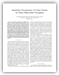
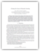
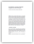
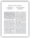
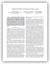

Corey Montella
cmontella@live.com
Profile
With a background in robotics, machine learning, and systems design, I strive to make technology easier for people to use through natural and intuitive interfaces. I derive my experience from projects include making autonomous assistive technology accessible for wheelchair users, making navigation and control algorithms easier to develop through reinforcement learning, and bringing programming to non-programmers through innovative language design.
Education
Lehigh University — Bethlehem, Pennsylvania
- Ph.D. Computer Engineering — Concentration in Mobile Robotics
- Dissertation: "Reinforcement Learning for Autonomous Dynamic Soaring"
- Advisor: Professor John Spletzer
Carnegie Mellon University — Pittsburgh, Pennsylvania
- B.S. Physics — Concentration in Computational Statistical Mechanics
- B.S. Business Administration — Concentration in Entrepreneurship
- Graduated with University Honors
Experience
Software Engineer — Kodowa, Inc.
Blog: http://incidentalcomplexity.com/
Built a programming language designed to bring the power of computation to everyone — not by making everyone a programmer but by finding a better way for us to interact with computers. On the surface, Eve is an environment a little like Excel that allows you to "program" simply by moving columns and rows around in tables. Under the covers it's a powerful database, a temporal logic language, and a flexible IDE that allows you to build anything from a simple website to complex algorithms.
Research Assistant — Lehigh University
I was part of a team of robotics researchers at Lehigh University, headed by Professor John Spletzer, where we studied mobile autonomous systems and applied robotics. My research was focused on outdoor mobile robots, including a smart autonomous wheelchair and a gliding autonomous aerial vehicle.
Laboratory Assistant — Lehigh University
This course focused on algorithms employed in mobile robotics for navigation, sensing, and estimation. Topics included common sensor systems, motion planning, robust estimation, Bayesian estimation techniques, Kalman and Particle filters, localization and mapping. My duties included directing and preparing weekly laboratory sessions, during which students used educational robot platforms to test concepts in control, computer vision, and localization.
Teaching Assistant — Lehigh University
This course was a survey of computing for students in engineering and the sciences. The course covered basic programming concepts, structures and algorithms, and their applications to solving scientific problems. My duties included teaching two recitation session a week, holding weekly office hours, proctoring exams, and grading exams and homework.
Projects
Eve — Kodowa, Inc.
I am currently part of a 4-person Engineering team building Eve, a new programming language based on Datalog and Functional Reactive Programming. It is a general-purpose, data-centric, and interactive language. Picture a relational spreadsheet with I/O. As the team is small, I've had my hand in aspects including language design and semantics, IDE development, and natural language processing.
Perpetual Autonomous Flight in UAVs — Lehigh University
Dynamic soaring is a technique whereby horizontal wind that varies in strength or direction is used to support flight. Seabirds like albatrosses are known to travel hundreds of kilometers in a single day utilizing dynamic soaring. We are investigating the possibility of using dynamic soaring techniques and solar power to generate perpetual flight of an Unmanned Aerial Vehicle (UAV) in the jet stream. My role in the project includes: systems integration between the aircraft, autopilot, and on-board computer; software integration between wind mapper, local planner, global planner, and hardware; optimal trajectory generation; and motion planning.
Smart Wheelchair System — Lehigh University
The autonomous wheelchair project is an effort to create a robust robotic wheelchair capable of navigating outdoor urban environments. My role in the project is to facilitate accurate and reliable localization and navigation. Localization is achieved through a combination of 2D and 3D LIDARs used to track salient features such as light poles and parking meters.
Gait Learning for Bipedal Robots — Carnegie Mellon University
Developed a machine learning technique for the Aldebaran Nao humanoid robot to learn correct gaits for bipedal locomotion. Gathered ground truth training data for both good and bad walks. Trained a nearest neighbors classifier to predict the next best pose based on learned gaits to construct a new, unique walk.
Publications
Journal Publications
-
February 2016A Smart Wheelchair Ecosystem for Autonomous Navigation in Urban Environments
D. Schwesinger, A. Shariarti, C. Montella and J. Spletzer
in Autonomous Robots
| Publisher Link | Abstract | BibTeX |
Refereed Conference Preceedings
-
September 2014Reinforcement Learning for Autonomous Dynamic Soaring in Shear Winds
C. Montella and J. Spletzer
in the IEEE/RSJ Int. Conf. on Intelligent Robots and Systems (IROS)
| Full Text | Abstract | BibTeX |Dynamic soaring (DS) is an aerobatic maneuver whereby a gliding aircraft harnesses energy from horizontal wind that varies in strength and/or direction to support flight. Typical approaches to dynamic soaring in autonomous unmanned aerial vehicles (UAVs) use nonlinear optimizers to generate energy-gaining trajectories, which are then followed using traditional controllers. The effectiveness of such a strategy is limited by both the local optimality of the generated trajectory, as well as controller tracking errors. In this paper, we investigate a reinforcement learning (RL) approach working in continuous space to control a DS aircraft flying in shear wind conditions. The RL controller operates in two stages: In the first stage, it observes a traditional sample-based controller flying a locally optimal DS trajectory generated a priori. In the second stage, the sample-based controller is removed and authority is passed to the RL algorithm. We show that by deviating from the original planned trajectory, the RL controller is able to achieve better performance than its baseline teacher controller.@inproceedings{MONTELLA_IROS:14, author = {Corey Montella and John Spletzer}, title = {Reinforcement Learning for Autonomous Dynamic Soaring in Shear Winds}, booktitle = {Proceedings of the IEEE/RSJ International Conference on Intelligent Robots and Systems (IROS)}, address = {Chicago, United States}, month = {September}, year = {2014} } -
January 2014Closing the Loop in Dynamic Soaring
J. Bird, J. Langelaan, C. Montella, J. Spletzer, and J. Grenestedt
in the AIAA Guidance, Navigation and Control Conf.
| Full Text | Abstract | BibTeX |This paper examines closed-loop dynamic soaring by small autonomous aircraft. Windfield estimation, trajectory planning, and path-following control are integrated into a system to enable dynamic soaring. The control architecture is described, performance of components of the architecture is assessed in Monte Carlo simulation, and the trajectory constraints imposed by existing hardware are described. Hardware in the loop simulation using a Piccolo SL autopilot module are used to examine the feasibility of dynamic soaring in the shear layer behind a ridge, and the limitations of the system are described. Results show that even with imperfect path following dynamic soaring is possible with currently existing hardware. The e ect of turbulence is assessed through the addition of Dryden turbulence in the simulation environment.@inproceedings{BIRD_AIAA:14, author = {John J. Bird and Jack W. Langelaan and Corey Montella and John Spletzer and Joachim Grenestedt}, title = {Closing the Loop in Dynamic Soaring}, booktitle = {Proceedings of the AIAA Guidance, Navigation and Control Conference}, address = {National Harbor, United States}, month = {January}, year = {2014}, doi = {10.2514/6.2014-0263} } -
July 2012To the Bookstore! Autonomous Wheelchair Navigation in an Urban Environment
C. Montella, T. Perkins, J. R. Spletzer and M. Sands
in the Int. Conf. on Field and Service Robotics (FSR)
| Full Text | Abstract | BibTeX |In this paper, we demonstrate reliable navigation of a smart wheelchair system (SWS) in an urban environment. Urban environments present unique challenges for service robots. They require localization accuracy at the sidewalk level, but compromise GPS position estimates through significant multi-path effects. However, they are also rich in landmarks that can be leveraged by feature-based localization approaches. To this end, our SWS employed a map-based localization approach. A map of the environment was acquired using a server vehicle, synthesized a priori, and made accessible to the SWS. The map embedded not only the locations of landmarks, but also semantic data delineating 7 different landmark classes to facilitate robust data association. Landmark segmentation and tracking by the SWS was then accomplished using both 2D and 3D LIDAR systems. The resulting localization method has demonstrated decimeter level positioning accuracy in a global coordinate frame. The localization package was integrated into a ROS framework with a sample based motion planner and control loop running at 5 Hz to enable autonomous navigation. For validation, the SWS repeatedly navigated autonomously between Lehigh University —s Packard Laboratory and the University bookstore, a distance of approximately 1.0 km roundtrip.@inproceedings{MONTELLA_FSR:12, author = {Corey Montella and Tim Perkins and John Spletzer and Michael Sands}, title = {To the bookstore! Autonomous Wheelchair Navigation in an Urban Environment}, booktitle = {Proc. of the Int. Conf. on Field and Service Robotics (FSR)}, address = {Matsushima, Japan}, month = {July}, year = {2012} } -
June 2012Dynamic Soaring in Hurricanes
J. Grenestedt, C. Montella, and J. Spletzer
in the Int. Conf. on Unmanned Aircraft Systems (ICUAS)
| Full Text | Abstract | BibTeX |The potential for a gliding UAV to sustain flight by dynamically soaring in a hurricane is investigated. Leveraging extensive storm observations, the wind profile of the hurricane eye is modeled as a continuous function that is zero at the center and increases as a power of the radius. We then derive the equations of motion for a UAV flying in this wind field, and prove analytically that if the wind field exponent n = 1, dynamic soaring is not possible. This analytical result is also validated in simulation. We also provide extensive simulation results for the case where the wind field exponent n > 1. These results indicate that dynamic soaring is in fact possible for such storms, and the velocity gain for a single dynamic soaring cycle is correlated with the wind field gradient.@inproceedings{GRENESTEDT_ICUAS:12, author = {Joachim Grenestedt and Corey Montella and John Spletzer}, title = {Dynamic Soaring in Hurricanes}, booktitle = {Proc. of the Int. Conf. on Unmanned Aircraft Systems (ICUAS)}, address = {Philadelphia, United States}, month = {June}, year = {2012} } -
May 2012Wind Field Estimation for Autonomous Dynamic Soaring
J. Langelaan, J. Spletzer, C. Montella, and J. Grenestedt
in the IEEE Int. Conf. on Robotics and Automation (ICRA)
| Full Text | Abstract | BibTeX |A method for distributed parameter estimation of a previously unknown wind field is described. The application is dynamic soaring for small unmanned air vehicles, which severely constrains available computing while simultaneously requiring updates that are fast compared with a typical dynamic soaring cycle. A polynomial parameterization of the wind field is used, allowing implementation of a linear Kalman filter for parameter estimation. Results of Monte Carlo simulations show the effectiveness of the approach. In addition, in-flight measurements of wind speeds are compared with data obtained from video tracking of balloon launches to assess the accuracy of wind field estimates obtained using commercial autopilot modules.@inproceedings{LANGELAAN_ICRA:12 author = {Jack Langelaan and John Spletzer and Cory Montella and Joachim Grenestedt}, title = {Wind Field Estimation for Autonomous Dynamic Soaring}, booktitle = {Rec. the IEEE Int. Conf. on Robotics and Automation(ICRA)}. address = {Minneapolis, MN}, month = {May}, year = {2012} }
Refereed Workshops
-
June 2014RoSCAR: Robot Stock Car Autonomous Racing
K. Hart, C. Montella, G. Petitpas, D. Schweisinger, A. Shariati, B. Sourbeer, T. Trephan, and J. R. Spletzer
in the MobiSys Workshop for Mobile Augmented Reality and Robotics-based Technology Systems (MARS)
| Full Text | Abstract | BibTeX |In this paper, we present the development of a low-cost, high-performance mobile robot platform for educational and research use called RoSCAR. The platform is based on a 1/10-scale short track race car, integrated with an on-board desktop-class computer, odometry, and RGB-D sensing. As part of an experimental robotics course, three student teams used RoSCAR to compete in a race around a 200 m indoor track. Students demonstrated reliable lane tracking and attained average lap speeds of up to 5.7 m/s (equivalent to 202 km/h at full scale). We are currently investigating the viability of a regional robotics competition centered around this concept.@inproceedings{HART_MARS:14, author = {Kyle Hart and Corey Montella and Georges Petitpas and Dylan Schweisinger and Armon Shariati and Ben Sourbeer and Tyler Trephan and John Spletzer}, title = {RoSCAR: Robot Stock Car Autonomous Racing}, booktitle = {in the MobiSys Workshop for Mobile Augmented Reality and Robotics-based Technology Systems (MARS)}, address = {Bretton Woods, United States}, month = {June}, year = {2014}, doi = {10.1145/2609829.2609837} } -
October 2012Stochastic Classification of Urban Terrain for Smart Wheelchair Navigation
C. Montella, M. Pollock, D. Schwesinger, and J. R. Spletzer
in the IROS Workshop on Progress, Challenges and Future Perspectives in Navigation and Manipulation Assistance for Robotic Wheelchairs
| Full Text | Abstract | BibTeX |In this paper we investigate the potential for enhancing the perception capabilities of smart wheelchair systems (SWS) in an urban environment through intensity-based terrain classification. A 3D camera system was employed that provided both range and intensity (remission) measurements to objects in the scene. Each sensor measurement was represented by a feature vector consisting of range, bearing angle, and intensity values. We then constructed a stochastic model by discretizing the feature space into cells, each of which corresponded to a probability mass function (PMF) denoting the probability a point in the feature space belonged to one of four classes: grass, sidewalk, street (blacktop), or unknown. The stochastic model was generated a priori from literally millions of labeled point measurements of the different terrain classes. Bayesian filtering techniques were then used to make a terrain class assignment for ground plane cells in the local map over time. We illustrate the utility of the approach by demonstrating autonomous sidewalk following of the SWS over two hundred of meters solely through terrain class assignment. Extensions such as enhanced ground plane segmentation are also discussed.@inproceedings{MONTELLA_IROS:12, author = {Corey Montella and Michael Pollock and Dylan Schwesinger and John Spletzer}, title = {Stochastic Classification of Urban Terrain for Smart Wheelchair Navigation}, booktitle = {Proc. of the IROS Workshop on Progress, Challenges and Future Perspectives in Navigation and Manipulation Assistance for Robotic Wheelchairs}, address = {Vila Moura, Portugal}, month = {October}, year = {2012} }
Presentations
Invited
-
September 2015Eve: Exploring and Visualizing Data for Non-Programmers
The Graphical Web Conference
Pittsburgh, Pennsylvania, United States -
October 2012Smart Wheelchairs and Ubiquitous Robotics
Legacy of Leadership: Lehigh on the National Stage
Bethlehem, Pennsylvania, United States
Refereed
-
September 2014Reinforcement Learning for Autonomous Dynamic Soaring in Shear Winds
at the IEEE/RSJ Int. Conf. on Intelligent Robots and Systems (IROS)
Chicago, Illinois, United States -
October 2012Stochastic Classification of Urban Terrain for Smart Wheelchair Navigation
at the IROS Workshop on Progress, Challenges and Future Perspectives in Navigation and Manipulation Assistance for Robotic Wheelchairs
Vilamoura, Algarve, Portugal -
July 2012To the Bookstore! Autonomous Wheelchair Navigation in an Urban Environment
Int. Conf. on Field and Service Robotics (FSR)
Matsushima, Miyagi, Japan
Other
-
September 2014Reinforcement Learning for Autonomous Dynamic Soaring in Shear Winds
at the Graduate Student Research Seminar
Bethlehem, Pennsylvania, United States -
July 2012To the Bookstore! Autonomous Wheelchair Navigation in an Urban Environment
at the Graduate Student Research Seminar
Bethlehem, Pennsylvania, United States
Media Coverage
-
July 2013The Future Of Flight: Planes That Never Need To Land
Story By: David Hambling Images By: Katie Peek
Popular Science
Story Link -
May 2013Endless and Effortless Flight — Inspired by the Albatross, Researchers Set Their Sights on the Jet Stream
Story By: Chris Quirk Photography By: Ryan Hulvat
Resolve Magazine, P.C. Rossin College of Engineering, Lehigh University
Story Link
Professional Activities
Reviewer
- IEEE Transactions on Mobile Computing (TMC)
- IEEE International Conference on Robotics and Automation (ICRA)
- IEEE Transactions on Automatoin Science and Engineering (T-ASE)
Memberships
- IEEE Graduate Student Member
- IEEE Robotics and Automation Society
Service
Department
-
2010 - 2014Lehigh University Tours - VADER Laboratory
Tour Guide -
2010 - 2011Lehigh University Family Day
Graduate Student Representative -
2010 - 2014Lehigh University Candidate's Day
Graduate Student Representative
University
-
2011Lehigh University Graduate Student Orientation
Student Ambassador
Community
-
2011 - 2013S.T.A.R. Academy Robotics Curriculum
Lead Instructor -
2007 - 2008Carnegie Mellon Physics High School Outreach Program
Mentor
Honors and Awards
- William C. Gotshall Fellowship
- Carnegie Mellon University Honors